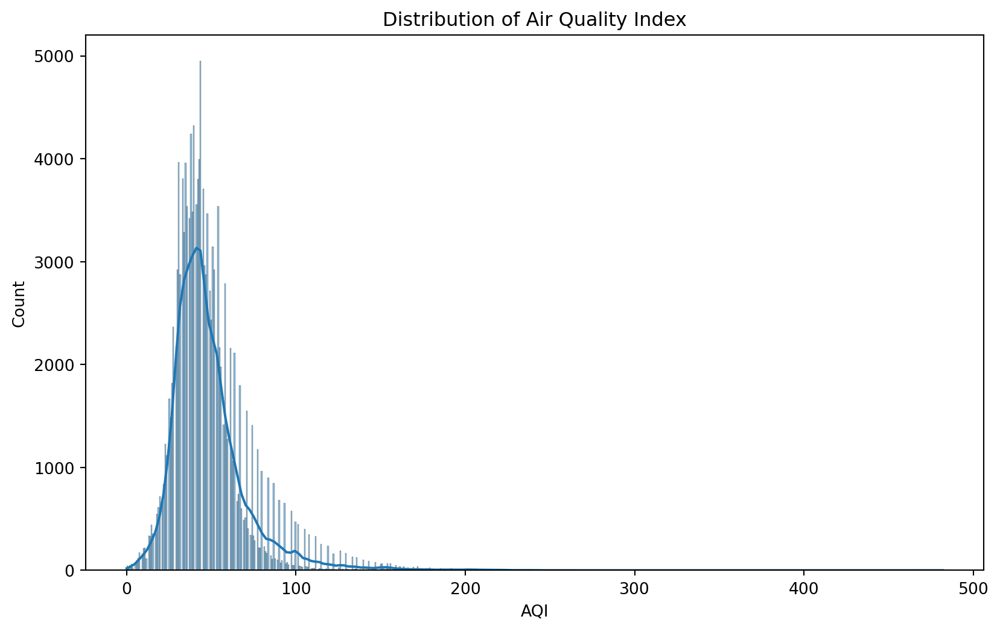
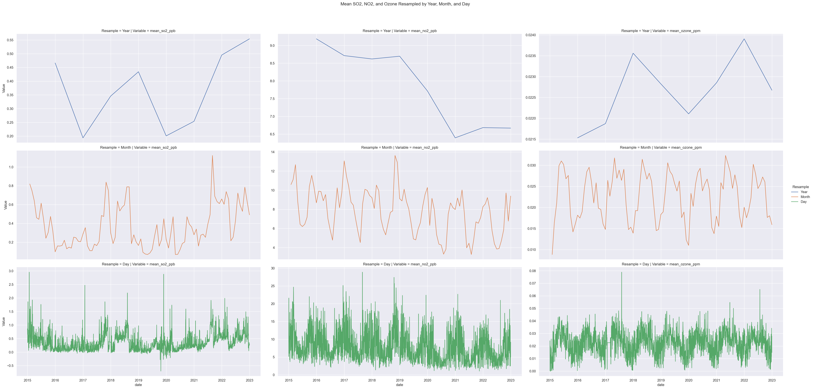

Unveiling the Drivers of Clean Air
Analysis of Portland Air Quality (AQI)
Introduction
On October 30, 1948, the Donora High School Football team pushed through a dense smog to complete the game with hundreds of fans in the audience, despite very poor visibility. The team, backed by a sense of resilience, took pride in playing through poor conditions, a testament to the high spirit of the small town. Soon after, calls to the town’s medical offices began rushing in, complaining of difficulty breathing and respiratory issues. Donora, Pennsylvania, was a town of metalworks, built by the American Steel and Wire company and the Donora Zinc Works company, which made up the largest parts of the town’s economy. The heavy smog and pollution clouds that covered the sky were a sign of prosperity. Only twelve hours later, seventeen people would be dead, 1440 seriously affected, and 4470 with mild to moderate conditions, almost half the town’s working population (Jacobs, Burgess, Abbott). This event, the Donora Smog of 1948, would lead the country into taking a close look at the negative impacts of air pollution. Widespread debate surrounding the event would lead to the first legislation regarding the regulation of the air within the United States, ushering in a new era of tracking, combatting, and reversing ill effects of poor air quality.
The quality of air we breathe has direct impacts on our health. We must understand the factors that contribute to poor air quality and how we personally and collectively contribute to the changes. Until we are able to visualize the impact we have on our atmosphere, we will continue behavior that negatively impacts the air around us.
In this project, we will be focusing on the key factors contributing to Portland, Oregon’s air quality. We aim to shed light on the complex interplay between various environmental and human-made factors that contribute to high air pollution levels. Initially, we were surprised to learn that Portland, the city we reside in, has some of the best air quality for a city of its size within the United States. This ultimately led us to narrow our focus on the factors that impact and lead to these outcomes within this city.
This project aims to develop and validate machine learning models for use in analysis of the various factors that influence air quality. By focusing on Portland in comparison to other large US cities, we hope to find things Portland does that lead to the greater AQI outcomes. Our approach will consider a range of variables, including meteorological conditions, pollution sources, and transit systems. Through this analysis, we aim to provide actionable insights and recommendations for sustaining and enhancing air quality. By examining both the contributors to clean air and the potential causes of pollution, we can understand air quality factors more accurately and develop comprehensive strategies for improvement.
Background
Federal regulation of air quality in the United States began in 1955 with the Air Pollution Control Act. This new piece of legislation provided the funds for initial research in air quality and pollution in the US. Using this and privately funded research, congress passed the Clean Air Act of 1963, putting into law the first federal regulation regarding control of air pollution. This established a new federal program within the US Public Health Service, dedicated to the monitoring and control of air quality. In 1967, congress passed the Air Quality Act, giving more federal oversight and enforcement policies. With this act, the government conducted extensive monitoring on interstate air pollution. This all led to the passing of the 1970 Clean Air Act, meant to restrict and regulate emissions, measure and reduce pollutant particles, and address upcoming pollution threats (Environmental Protection Agency).
Also created in 1970, the Environmental Protection Agency (EPA) implemented and monitored the requirements established by these rulings. These would affect not just federal lands and roads, but all companies operating within the United States. Enforcement authority was expanded to allow upholding these established standards, and prevent companies from circumventing the law. Much of the turnaround in the quality of air in the US over the past fifty years can be attributed to these regulations. In 1990, when deaths due to air quality were first measured, an estimated 135,000 Americans died. By 2010 that number had dropped to 71,000 (Zhang et al.). Despite the significant decreases led by the federal guidelines of the late 70s, nearly four in ten Americans still live in places where they are exposed to unhealthy air (American Lung Association).
The EPA developed the Air Quality Index (AQI) in 1999, creating an easily understood measurement for the quality of the air we breathe. The AQI measures the level of air pollution on a scale from 0 to 500. It is divided into six categories, with 0 to 50 representing good air quality which poses little or no risk to those breathing it in. On the other hand, a score above 300 signifies emergency conditions, an extremely high risk which impacts everyone. This measurement is mainly derived from five major pollutants: Ozone, Particle pollution (2.5μm and 10μm), Carbon Monoxide, Nitrogen Dioxide, and Sulphur Dioxide (Airnow.gov). Poor air quality has been linked to a variety of diseases including respiratory infections, stroke, heart disease, lung cancer, and chronic obstructive pulmonary disease among others (World Health Organization). An estimated seven million premature deaths annually can be attributed to air pollution, or a global mean loss of life expectancy of 2.9 years, quantifying it as the largest environmental risk factor for disease and premature death (Fuller, Landrigan, Balakrishnan, et. al.). Thus, it is important to understand factors that contribute to poor air quality, and outcomes that can be attributed to the state of the AQI.
Methods
Tools Deployed
Python will be the primary programming language used to conduct this analysis. We will also use R language in statistical applications where necessary.
To perform our analysis, we will employ NumPy and Pandas for data manipulation. Matplotlib and Seaborn for visualization, and Time Series forecasting algorithms such as Prophet and SARIMAX.
We will address data inconsistencies, missing values and ensure that data is in a tidy format.
We may need to normalize or standardize data if necessary and create new features through aggregation to enhance the model’s performance.
What is Prophet?
Prophet is an open-source forecasting tool developed by Meta, designed for forecasting time series data. It is suited for datasets with strong seasonal, monthly, weekly, or daily patterns, and it handles missing data and outliers well. We utilized prophet to gain a quick understanding of our AQI patterns, seeking to understand basic trends before conducting a more thorough analysis.
Key features of Prophet include seasonality detection and holiday incorporation, while providing easy use and understanding for users. We can use this software to get complex understanding from simple applications.
To conduct this analysis, we prepare data into a two column table, date and AQI. Prophet uses the trends of past data to highlight similarities over days of the year, weeks, months, and seasons. From this, prophet is able to generate its predictions, cross validate, and give performance metrics such as mean absolute percentage error to quantify the accuracy of the results.
What is SARIMAX algorithm?
The most common method used in time series forecasting is known as the ARIMA model. We will use an extended version called SARIMAX (Seasonal Auto Regressive Integrated Moving Averages with exogenous factor)
- The SARIMAX model is used when the data sets have seasonal cycles.
- In the dataset concerning the air quality/AQI there is a seasonal pattern which we have explained in the above section.
- SARIMAX is a model that can be fitted to time series data in order to better understand or predict future points in the time series
- SARIMAX is particularly useful for forecasting time series data that exhibits both trends and seasonality.
Here’s a breakdown of its components:
There are three distinct integers (p,d,q) that are used to parametrize SARIMAX models. Because of that, ARIMA models are denoted with the notation SARIMAX(p,d,q).
Together these three parameters account for seasonality, trend, and noise in datasets:
- Seasonality (S): Accounts for recurring patterns or cycles in the data.
- AutoRegressive (AR): Uses past values to predict future values.
- Integrated (I): Applies differencing to make the time series stationary.
- Moving Average (MA): Uses past forecast errors in the prediction.
- eXogenous factors (X): Incorporates external variables that may influence the forecast.
We are trying to find the right p, d, q hyperparameters to correctly forecast and predict the AQI values.
Common Techniques to Evaluate the Performance of Machine Model
1. Train-Test Split
- Description: Split the dataset into training and testing subsets.
- Purpose: Assess the model’s performance on unseen data to detect overfitting and ensure generalizability.
2. Cross-Validation
- Description: Divide the data into k subsets and train the model k times, each time using a different subset as the test set and the remaining as the training set.
- Purpose: Provides a more robust estimate of model performance by averaging results over multiple splits.
3. Confusion Matrix
- Description: A table used to describe the performance of a classification model by comparing predicted and actual values.
- Metrics: True Positives (TP), True Negatives (TN), False Positives (FP), False Negatives (FN).
4. Accuracy
- Description: The ratio of correctly predicted instances to the total instances.
- Formula: \(\text{Accuracy} = \frac{TP + TN}{TP + TN + FP + FN}\)
5. Precision, Recall, and F1-Score
Precision
- Description: The ratio of correctly predicted positive observations to the total predicted positives.
- Formula: \(\text{Precision} = \frac{TP}{TP + FP}\)
Recall (Sensitivity)
- Description: The ratio of correctly predicted positive observations to all observations in the actual class.
- Formula: \(\text{Recall} = \frac{TP}{TP + FN}\)
F1-Score
- Description: The harmonic mean of Precision and Recall.
- Formula: \(\text{F1-Score} = 2 \times \frac{\text{Precision} \times \text{Recall}}{\text{Precision} + \text{Recall}}\)
6. ROC Curve and AUC (Area Under the Curve)
- ROC Curve: A graphical representation of the true positive rate vs. false positive rate at various threshold settings.
- AUC: Measures the entire two-dimensional area underneath the ROC curve. Higher AUC indicates better model performance.
7. Mean Absolute Error (MAE)
- Description: The average of the absolute differences between predicted and actual values.
- Formula: \(\text{MAE} = \frac{1}{n} \sum_{i=1}^{n} |y_i - \hat{y}_i|\)
8. Mean Squared Error (MSE) and Root Mean Squared Error (RMSE)
MSE
- Description: The average of the squared differences between predicted and actual values.
- Formula: \(\text{MSE} = \frac{1}{n} \sum_{i=1}^{n} (y_i - \hat{y}_i)^2\)
RMSE
- Description: The square root of MSE.
- Formula: \(\text{RMSE} = \sqrt{\text{MSE}}\)
9. R-squared (Coefficient of Determination)
- Description: The proportion of the variance in the dependent variable that is predictable from the independent variables.
- Formula: \(R^2 = 1 - \frac{\sum_{i=1}^{n} (y_i - \hat{y}_i)^2}{\sum_{i=1}^{n} (y_i - \bar{y})^2}\)
10. Akaike Information Criterion (AIC) and Bayesian Information Criterion (BIC)
AIC
- Description: Measures the relative quality of a statistical model for a given set of data.
- Formula: \(\text{AIC} = 2k - 2\ln(L)\) where \(k\) is the number of parameters and \(L\) is the likelihood.
BIC
- Description: Similar to AIC but includes a penalty term for the number of parameters.
- Formula: \(\text{BIC} = k\ln(n) - 2\ln(L)\) where \(n\) is the number of observations.
Machine Learning AQI Time Series
How can we use Akaike Information Criteria (AIC)?
Used to measure of a statistical model, it quantifies:
- The goodness of fit
- The simplicity of the model into a single statistic
- When comparing two models, the one with the lower AIC is generally “better”
The Akaike Information Criterion (AIC) is a measure used to compare different statistical models. It helps in model selection by balancing the goodness of fit and the complexity of the model. Here’s how to interpret the AIC value:
- Lower AIC is Better: A lower AIC value indicates a better-fitting model. It means the model has a good balance between accuracy and complexity.
- Comparative Measure: AIC is most useful when comparing multiple models. The model with the lowest AIC among a set of candidate models is generally preferred.
- Penalty for Complexity: AIC includes a penalty for the number of parameters in the model. This discourages overfitting by penalizing models that use more parameters without a corresponding improvement in fit.
Data Explaination
The data for this project was initially scattered across multiple sources and required significant organization and compilation. The focus of this project is on the air quality in Portland, Oregon, so various data sources were aggregated and processed to compare a variety of air quality indicators.
Air Quality Data:
Air quality data, specifically AQI values, were obtained from the United States Environmental Protection Agency (EPA) pre-generated data files. The AQI values are calculated daily, based on a variety of factors including criteria gasses and measured pollutant concentrations, and measures how harmful breathing the air is. AQI is classified into one of six categories from ‘good’ to ‘hazardous’, each having long term health effects associated with it. The files were given daily on a county wide basis, separated into different files by year.
Meteorological Data:
Historical weather data was also sourced from the EPA database, measured by thousands of weather stations across the country. Measurements tracked include temperature, wind speed, air pressure, and humidity. Temperature is measured in degrees fahrenheit. Wind speed is measured in knots, which are defined as one nautical mile per hour (equivalent to approximately 1.15mph). Wind speed is important in air quality as winds can blow different pollutants around and move and spread wildfires. Pressure is measured in millibars, where 1013.25 millibars is the standard atmospheric pressure (Earth’s pressure at mean sea level). Finally, humidity is measured in percent relative humidity. This is the amount of water vapor in the air as a percentage of the maximum amount of water vapor possible at a given temperature. Humidity can make it more difficult to breathe and sweat, make the air feel hotter than it is, and prevent air pollutants from dispersing as easily. Indoors, high humidity can trap air, leading to the growth of mold and harmful bacteria. This data was given daily by city, separated into different files by year. Measurements were taken hourly, but pre-calculated in the source database, giving an average value over the twenty four hours and a maximum value.
Pollution Source Data:
Pollution data was again sourced from the EPA database, separated by criteria gasses (CO, NO2, O3, SO2), Toxins (lead), and particulate matter (PM2.5 and PM10). Criteria gas Carbon Monoxide is measured in parts per million, and is especially dangerous as it is both colorless and odorless. CO binds to hemoglobin in the blood, making the transportation of oxygen around the body more difficult. Nitrogen Dioxide is dangerous to breathe in at high levels. It can cause swelling in the throat, burning, reduced oxygenation of body tissues, and fluid build up in the lungs. It is released in many common combustion reactions including in cars, coal plants, and cigarettes. It is measured in parts per billion. Ozone can harm our ability to breathe, especially in older people, children, and people with asthma. It is measured in parts per million. Sulfur Dioxide, measured in parts per billion, can irritate the eyes, mucous membranes, skin, and respiratory tract. Lead is a toxin which can increase the risk of high blood pressure, cardiovascular problems, and complications during pregnancy. While exposure has gone down significantly in the recent decades after use in gasoline, it still remains a dangerous toxin to breathe in. It is measured in micrograms per cubic meter. PM2.5 and PM10 are particulate matter, small inhalable particles with diameters of 2.5 microns or smaller, and 10 microns or smaller respectively. PM2.5 includes all sorts of common particles, metals, and organic compounds. PM10 includes dust, pollen, molds, and other larger (but still very small) particles. Due to the variability of particles included in the PM classification, there are a wide range of negative health impacts that come from breathing in these particles. PM2.5 and PM10 are measured in micrograms per cubic meter.
This data was given daily by city, separated into different files by year. They are sourced from thousands of individual sources, which measure various selections of these pollution sources. Because of the variety of different pollutants being measured, there was a significant amount of missing data, especially from small towns. Measurements were taken hourly, pre-compiled into a daily average and maximum.
Transit Data:
Information on motor buses taken from the National Transit Database, produced by the Federal Transit Administration. Includes information of bus systems and ridership by city, separated by year. Data is recorded yearly, encompassing annual totals for information such as number of buses, total revenue, passengers, and miles driven for the respective city transit systems. Information was given in yearly CSVs, separated by the city transit system. For cities with multiple systems, data was combined. Only motorbus data was used, which may not be reflective of cities with other large methods of public transportation, such as the New York subway system.
Population Data:
Data on population and population density sourced from the Simplemaps United States Cities database, which is built from multiple sources including the U.S. Geological Survey and the U.S. Census Bureau. Data is updated as of May 6, 2024, reflecting very up to date information.
Data Processing
The data was downloaded in R. For information given in yearly CSV files, data was stacked vertically to include all years in our time frame. In all tables, relevant columns were selected and renamed, reducing the information being brought into our initial SQL database. R was connected and imported to PostgreSQL using the RPostgres package, and used to read, stack, select columns, and rename columns before being written into a PostgreSQL database.
Data Organization
Given the raw data available, the table structure was simplified compared to the original data sources. Data was organized in a star schema centered on the air_quality fact table. This table tracks AQI, pollutant, weather and toxin data daily for each location. The first dimension table is the dates table, a serialized list of dates from January 1st, 2015 to December 31st, 2022. Next, we have a locations dimension table, a serialized list of over 1400 cities and towns from around the country. These are labeled by the state, county, and city name, as well as the population and population density, allowing connection to information based on what is given. The aqi_category dimension table is a short list of AQI value categories (Good, Unhealthy, Hazardous, etc.) with their respective AQI value range as minimum and maximum values.
Finally, the yearly_transit dimension table gives the information for the transit system of the respective city during the specified year attached in the fact table. This table seems counterproductive to not include the location or year of the specified line or even a reference id, but in keeping with star schema, it was decided that this was the best way to reference this information. Understanding the context of a specified line requires joining the table back to the fact table, and joining the location and date tables to that as well.
Each table has a unique serialized primary key, and all dimension tables are connected via foreign key. Several additional indexes are included on columns that will be queried often. Finally, constraints have been added to limit unusual or impossible data.
Tracking these identifiers independently allows for accurate analysis of changes over time and across different areas, and allows adding new information should we need to update the database. (Figure 1) illustrates the resulting ERD structure using drawSQL.
Figure 1.

Initial Exploratory Data Analysis (EDA)
We have a new dataset named metro_1mil.csv. This file was created using a SQL statement that joins all relevant tables, filtering for metropolitan areas with populations less than or equal to 1 million. This approach limits our EDA to mid-sized metropolitan cities, such as Portland, Oregon.
Visualization AQI Distribution
Dataframe Shape
The DataFrame contains 147039 rows and 44 columns.
Exploring Oregon State:
By filtering our Dataframe for Oregon state, our DataFrame contains 2922 rows.
Features Engineering
Date Column Preprocessing:
- Converted the date column to DateTime objects for easier manipulation and analysis.
- Extracted additional time-based features: year, month, day of week, and quarter.
Feature Selection:
- Removed irrelevant columns to focus the analysis on pertinent variables.
- Retained features: pollutant, aqi, wind
Missing Value Treatment:
- Identified columns with missing values: most all of them
- Applied mean() imputation method for numerical columns.
- For categorical columns: n/a
Data Types and Memory Usage:
- Optimized data types to reduce memory usage (e.g., using categories for low-cardinality strings, int8/int16 for small integers).
Basic Statistics:
- Generated summary statistics for numerical columns using df.describe().
- Calculated frequency distributions for categorical variables.
Distribution Analysis:
- Plotted histograms and kernel density estimates for main numerical features.
Time Series Components:
- Decomposed time series data into trend, seasonality, and residual components for relevant variables.
Sweetviz Data Report
Report SWEETVIZ_REPORT.html was generated! NOTEBOOK/COLAB USERS: the web browser MAY not pop up, regardless, the report IS saved in your notebook/colab files.We have generated a complete statistical report confirming the quality of EDA steps.
Advanced Exploratory Data Analysis
We have also employed the ydata-profiling package, a powerful Time Series Analysis EDA package that offers more detailed analysis.
We have unlocked time series-specific features using ydata-profiling: - Set tsmode=True when creating the ProfileReport - Ensure our DataFrame is sorted or specify the sortby parameter - Time Series Feature Identification
The ydata identifies time-dependent features using autocorrelation analysis.
For recognized time series features: - Histograms are replaced with line plots - Feature details include new autocorrelation and partial autocorrelation plots - Two additional warnings may appear: NON STATIONARY and SEASONAL
Handling Multi-Entity Time Series Data, In our case, with category_id:
- Each pollutants represents a distinct time series
- For optimal analysis, we filter and profile each pollutant separately
Our exploratory data analysis (EDA) process consisted of two complementary approaches:
Manual Investigation: We conducted an in-depth, hands-on examination of the dataset.
Automated Analysis: We leveraged two powerful EDA packages:
Sweetviz: For quick, visual data summaries
ydata-profiling: For more detailed, customizable reports
These methods allowed us to thoroughly evaluate key data quality aspects, including:
- Class balance in categorical variables
- Presence and distribution of missing values (NaN)
- Feature distributions and correlations
- Potential time-series characteristics
This multi-faceted approach ensures a robust understanding of our dataset’s structure, quality, and potential challenges before proceeding with further analysis.
Time Series Visualization for CO Pollutant, Wind and AQI
CO pollutant refers to carbon monoxide, which is a colorless, odorless, and tasteless gas that can be harmful to human health and the environment. Here’s some key information about CO as a pollutant:
Primarily produced by incomplete combustion of carbon-containing fuels Major sources include vehicle exhaust, industrial processes, and some natural sources like volcanoes
- Slightly less dense than air
- Highly flammable
<Figure size 1000x1800 with 0 Axes>
Time Series Visualization for SO2, NO2 and Ozone
NO2 (nitrogen dioxide) is an important air pollutant. Here’s a concise overview of it:
- Reddish-brown gas with a pungent odor - Part of a group of pollutants known as nitrogen oxides (NOx)
SO2 (sulfur dioxide) is an important air pollutant. Here’s a concise overview of SO2 as a pollutant:
- Colorless gas with a sharp, pungent odor
- Highly soluble in water
Ozone (O₃) as a pollutant is a complex topic, as it can be both beneficial and harmful depending on its location in the atmosphere. Here’s a concise overview of ozone as a ground-level pollutant:
- Colorless to pale blue gas with a distinctive smell
- Highly reactive molecule composed of three oxygen atoms
<Figure size 1500x2000 with 0 Axes>
The EDA is completed.
Jake’s conclusion
After conducting our thorough research, we have landed on these specific recommendations. First, we found there are high seasonal trends where late summer/early fall tends to have the worst air quality. These numbers consistently show up each year, exasperated by the dry heat and lack of rainfall. As climate change raises temperatures and water sources dry up, wildfire season will continue to get worse over time. We must be aware of the nature of air quality and how it differs at different parts of the year. We should understand how the AQI works, and avoid being outside for too long when it reaches more dangerous levels.
Next, we should focus on the variables that have the greatest impact on the AQI. These are city, temperature, humidity, CO, NO2, O3, PM10, and PM2.5. City, temperature, and humidity for the most part are out of our control. That leaves us with three criteria gasses and all particulate matter. The largest source of carbon monoxide, nitrogen dioxide, and ozone is the cars, trucks, and other vehicles we use daily (Environmental Protection Agency). We can lower our reliance on personal vehicles by utilizing public transportation, carpooling, walking, biking, increasing work from home to lower commutes when available, and overall be more considerate about if driving a car is necessary. We often drive unnecessarily, out of convenience or impatience. For many Americans, personal vehicles are required. Many urban and suburban areas lack proper public transportation, or existing public transportation systems are inadequate, unreliable, and infrequent. Many towns and cities in the United States were designed for cars instead of for people. Fixing this will require a substantial overhaul, necessitating millions or billions of dollars in spending. This is not to say that we shouldn’t bother, any investment that increases the public transportation system’s usage decreases the amount of cars on the road. A small step to start is better than not changing anything.
Industrial manufacturing processes, transport, and agriculture are significant polluters of the environment. We should decrease our reliance on these by purchasing more locally made products, lowering transportation distances. We should invest in the research of more environmentally friendly manufacturing methods, working with materials that require less combustion, or are recyclable. Agricultural reduction starts with less of a reliance on red meat and the dairy industry, mainstays of the American diet. This will be a huge shift, taking combined efforts of the citizens, government, and food industry. As red meat and dairy consumption goes down, possibly due to the replacement with artificial or lab grown meat, less livestock will need to be kept, and less feeding crops will need to be grown (Congressional Budget Office). It will be a difficult transition but a necessary one.
Wildfires not only increase the particle matter in the air, but burn forests, causing long term damage to the soil. Particulate matter in the air makes it more difficult to breathe, which is reflected by the increased AQI levels. Not all forest fires are started by man made sources, but many are. Therefore, when in the woods, one should always obey fire restrictions, especially in the middle of the summer when it’s most dry. If fires are allowed, they should always be watched and never left unattended. They must always be properly extinguished and all embers must be cool to the touch before leaving. Campsites should be properly cleaned, and all tools used correctly. One should also stay on marked trails, avoiding trampling vegetation which can increase the risk of wildfire spreading (Oregon Wildfire Response and Recovery).
Ultimately, we have a responsibility to take care of our planet and combat climate change. The worse climate conditions get, the more wildfires will spread, and the worse the air quality will become. As time goes on, with worsening air conditions, more people will catch and even die from preventable conditions sparked by poor air quality. Water, pollution, food, and financial problems will get worse. One should look at what they can do to make a difference, support those who vouch to make larger changes, and encourage people they know to do the same. It can get much worse, but it can also get much better.
Stephane’s conclusion
Insights and Limitations of Air Quality Forecasting
Our capstone project has provided valuable experience in long-term air quality forecasting. However, it’s crucial to acknowledge several key factors that influence the accuracy and reliability of these predictions:
Impact of Uncontrollable Environmental Factors
- Air quality is significantly affected by various natural and unpredictable elements, including:
- Weather conditions
- Wind speed and direction
- Temperature fluctuations
- Humidity levels
- Atmospheric pressure
- Solar radiation intensity
Our analysis revealed correlations between these variables, as illustrated in the following correlation matrix:

Correlation Matrix Despite these complexities, our forecasts can provide a general trend of air quality fluctuations.
- Air quality is significantly affected by various natural and unpredictable elements, including:
Algorithm Dependence
- The reliability of forecasts is inherently tied to the chosen predictive algorithms.
- Different models may yield varying results, emphasizing the importance of algorithm selection and validation.
Geographical Considerations
- Our data analysis couldn’t fully quantify the unique geographical features of Portland and the broader Willamette Valley region:
- The protective influence of surrounding mountain ranges
- The impact on wind patterns and air circulation
- The potential effects of wildfires on air quality
These geographical factors play a significant role in local air quality dynamics but were beyond the scope of our current data set.

- Our data analysis couldn’t fully quantify the unique geographical features of Portland and the broader Willamette Valley region:
By recognizing these limitations, we can better interpret and apply our forecasting results, while also identifying areas for future research and data collection to enhance prediction accuracy.
Bibliography
American Lung Association, https://www.lung.org/research/sota/key-findings
Airly, https://airly.org/en/how-does-humidity-affect-air-quality-all-you-need-to-know/
Airnow.gov, https://www.airnow.gov/aqi/aqi-basics/using-air-quality-index
California Air Resources Board, https://ww2.arb.ca.gov/resources/carbon-monoxide-and-health
Centers for Disease Control and Prevention, Agency for Toxic Substances and Disease Registry, https://wwwn.cdc.gov/TSP/ToxFAQs/ToxFAQsDetails.aspx?faqid=396&toxid=69
Centers for Disease Control and Prevention, Agency for Toxic Substances and Disease Registry, https://wwwn.cdc.gov/TSP/MMG/MMGDetails.aspx?mmgid=249&toxid=46
Congressional Budget Office, https://www.cbo.gov/publication/60030
Environmental Protection Agency, https://www.epa.gov/pm-pollution/particulate-matter-pm-basics
Environmental Protection Agency, https://www.epa.gov/ground-level-ozone-pollution/health-effects-ozone-pollution
Environmental Protection Agency, https://www.epa.gov/clean-air-act-overview/evolution-clean-air-act
Federal Transit Administration, https://www.apta.com/research-technical-resources/transit-statistics/ntd-data-tables/
Fuller, Landrigan, Balakrishnan, et al., https://www.thelancet.com/journals/lanplh/article/PIIS2542-5196(22)00090-0/fulltext
Jacobs, Burgess, Abbott, https://www.ncbi.nlm.nih.gov/pmc/articles/PMC5922205/
Manisalidis, Stavropoulou, Stavropoulos, Bezirtzoglou, https://www.ncbi.nlm.nih.gov/pmc/articles/PMC7044178/
National Oceanic and Atmospheric Administration, https://oceanservice.noaa.gov/facts/nautical-mile-knot.html
National Weather Service, https://www.weather.gov/source/zhu/ZHU_Training_Page/winds/pressure_winds/Pressure.htm
Oregon Wildfire Response and Recovery, https://wildfire.oregon.gov/prevention
World Health Organization, https://www.who.int/news-room/fact-sheets/detail/lead-poisoning-and-health
Zhang Et. Al. https://acp.copernicus.org/articles/18/15003/2018/
World Health Organization, https://www.who.int/news/item/25-03-2014-7-million-premature-deaths-annually-linked-to-air-pollution